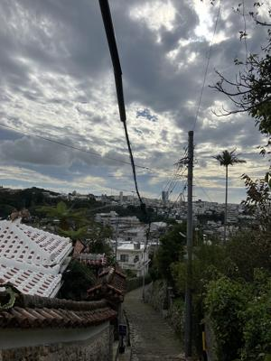
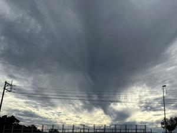
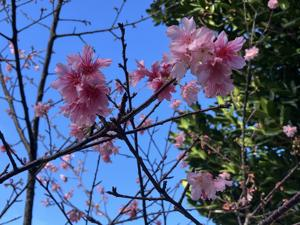

うるがいの話 ある日
最新: オー・ヘンリーの小説【うるがいの話 ある日】とは 一日だけのプログです
『うるがいの話』の最新一日だけのプログで、通信料が少なく経済的だ。カニの画像をクリックすると全ての日付が載る『うるがいの話』サイトを表示します
|
|
【うるがいの話】 うるがい(ｳﾙｶﾞｲ urugai)とは、『もずくがに』の名前でとても大きくなります。 |
|---|---|
|
|
【カミマヤーの話】 猫のことを方言でマヤーといいます。カミマヤー（kamimayaa）とは、神の猫のことです。 |
|
【たながぁの音楽】 たながぁ（ﾀﾅｶﾞｰ tanagaa）とは手長えびのことで、何種類かあり大きいのは車 エビぐらいになります。 |

|
【ぶながぁの話】 ぶながぁ(ﾌﾞﾅｶﾞｰ bunagaa)とは、赤い髪の毛、赤い身体、そして身長は１ｍ２０ｃｍ ぐらい、川の蟹を食べているの目撃された。場所は沖縄県国頭郡大宜味村のと ある村僕の隣近所に住んでいる爺さんから、聞いた話です。 |
|
|
【ギーマの話】 ギーマ(giima)とは、山原の里山に咲くスズランに似た、 花を付けます。実は食べられます、 気が付くと口の周りが紫になっています。 |
2024年02月05日 (月）オー・ヘンリーの小説
15:23
 


洋書のラダーシリーズ（英語初心者向けの英語本）を大量に購入しまして、今
日は『ベスト・オブ・オー・ヘンリー』という１冊の短編小説を読んでみまし
た。今回読んだのは、ラダーシリーズのレベル２です。これは、英検３級レベ
ルなので、英語としてはそこまでむずかしくありません。実際、僕はこれまで
にもペーパーバックを何冊か読んできて、内容がむずかしくなければ洋書も読
めます。
にもかかわらず、『ベスト・オブ・オー・ヘンリー』を読んでも半分くらいし
か理解できませんでした。
僕はこれまでラダーシリーズのレベル５も読了したことがあるので、「レベル
２のラダーシリーズだし、余裕だな〜」と思っていただけに、オー・ヘンリー
が読めないのはなかなかのショック。
同感！、読めたけど意味が分からん、悔しいのでｃｈａｔＧＰＴに教えてもら
おうと接続しようとしたら、何故かロボット扱いされ接続できない。ウムウム
マカフィーのＶＰＮ機能をオフにしたら無事に繋がった。っけ、でも教えても
らったのは、まったくもってダメ、あきらめずネット検索すると日本語訳が無
料で載っていた（凄い人がいるもんだ）。

１５時１４分 ビットコインの総資産 ￥１８、３９４（↓１３）